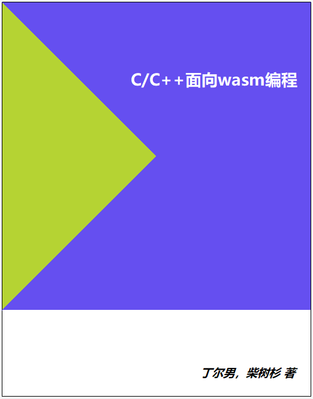

C/C++面向wasm编程——Emscripten工程实践
Ending's law: "Any application that can be compiled to WebAssembly, will be compiled to WebAssembly eventually."
WebAssembly是新一代的Web虚拟机标准，C/C++程序可以通过Emscripten工具链编译为WebAssembly二进制格式.wasm，进而导入网页中供JavaScript调用——这意味着使用C/C++编写的程序将可以直接运行在网页中。
本书从Emscripten基本使用开始介绍了C/C++开发WebAssembly模块的方法；并且以作者在实际工程项目中获取的一手经验为基础，提出了一些一般性的设计原则和技术框架。
笔者认为，一个理想的面向Web的C/C++工程应该对编译目标不敏感——既可以被编译为NativeCode直接运行，也可以被编译为WebAssembly在网页中运行，二者的切换只需要更改运行环境设置，如此方可充分利用现有IDE环境强大的开发、调试、分析、测试等功能，提高工程质量、降低开发成本。
但WebAssembly的运行环境毕竟与本地环境有着巨大的差异，因此为了达到上述理想目标，从整体框架到接口设计甚至到函数间的数据交换层面都必须充分考虑Web环境的特点（或者说限制），而这正是本书所贯彻的“WebAssembly友好”的内涵所在。

- 作者：丁尔男，Github @3dgen
- 作者：柴树杉，Github @chai2010，Twitter @chaishushan
- 项目地址：https://github.com/3dgen/cppwasm-book
在线阅读
关注微信公众号 (wasm-hackers) 或 QQ群 (726475047)
版权声明
自有版权，转载请联系作者。